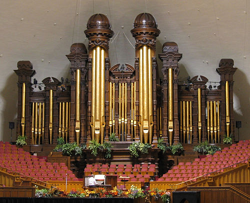

Personal Favorite Organs around the World
- Salt Lake Tabernacle Organ
- Is played on National Televeision at least twice a year for The Church of Jesus Christ of Latter-Day Saints General Conference.
- Has 11,623 pipes and 147 speaking stops.
- Source for Image and Information
- BYU Concert Hall Organ
- Was completed the 2024/2025 school year.
- Has 4,613 pipes and 81 ranks.
- Source for Information and Video Selection
- Tableau Graph about the Wrong Type of Organ

